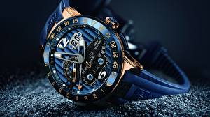

|
 RSS RSS
| 26.02.2017 Часы мужские 4u classic |
 траншейные часы), а окончательное признание наручные часы мужские 4u classic часы получили исключительно в начале XX века. В текущее время функции наручных часов перебежали к телефонам и смарт-часам, тогда как обычным наручным часам остались роли декорации и показателя общественного статуса ... траншейные часы), а окончательное признание наручные часы мужские 4u classic часы получили исключительно в начале XX века. В текущее время функции наручных часов перебежали к телефонам и смарт-часам, тогда как обычным наручным часам остались роли декорации и показателя общественного статуса ...
|
| 23.02.2017 Часы мужские эйвон отзывы |
 Ювелирные часы — предмет роскоши, один из видов дизайнерских часов. Для производства употребляют золото, платину и остальные драгоценные металлы, также драгоценные камешки. Дамские часы — часы, сделанные часы мужские эйвон отзывы специально для дам, основная задачка которых быть частью ... Ювелирные часы — предмет роскоши, один из видов дизайнерских часов. Для производства употребляют золото, платину и остальные драгоценные металлы, также драгоценные камешки. Дамские часы — часы, сделанные часы мужские эйвон отзывы специально для дам, основная задачка которых быть частью ...
|
| 21.02.2017 Часы мужские rolex |
 Систематизация наручных часов[править | править код] часы мужские rolex Традиционные — имеют серьезный дизайн, в большинстве случаев не снабжаются лишними функциями. Сложные часы — часы, часы мужские rolex имеющие дополнительные функции-усложнения. Спортивные часы — часы часы мужские ... Систематизация наручных часов[править | править код] часы мужские rolex Традиционные — имеют серьезный дизайн, в большинстве случаев не снабжаются лишними функциями. Сложные часы — часы, часы мужские rolex имеющие дополнительные функции-усложнения. Спортивные часы — часы часы мужские ...
|
| 16.02.2017 Часы мужские kronen sohne |
 Хронометры — часы завышенной точности и стабильности хода. Часовой механизм и секундомер часы мужские kronen sohne работают независимо друг от друга. Ювелирные часы — предмет роскоши, один из видов дизайнерских часов. Для производства употребляют золото, платину и остальные драгоценные металлы, ... Хронометры — часы завышенной точности и стабильности хода. Часовой механизм и секундомер часы мужские kronen sohne работают независимо друг от друга. Ювелирные часы — предмет роскоши, один из видов дизайнерских часов. Для производства употребляют золото, платину и остальные драгоценные металлы, ...
|
| 12.02.2017 Часы мужские pagani |
 — устройство, носимый на запястье и часы мужские pagani служащий для индикации текущего времени и измерения временны? Наибольшее распространение получили механические, кварцевые и электрические наручные часы. 1-ые наручные часы были сделаны сначала XIX века для Евгения Богарне,[источник не ... — устройство, носимый на запястье и часы мужские pagani служащий для индикации текущего времени и измерения временны? Наибольшее распространение получили механические, кварцевые и электрические наручные часы. 1-ые наручные часы были сделаны сначала XIX века для Евгения Богарне,[источник не ...
|
| 04.02.2017 Часы мужские 0979 |
 — устройство, носимый на запястье и служащий для индикации текущего времени и измерения временны? Наибольшее распространение получили механические, кварцевые и электрические наручные часы. 1-ые наручные часы были сделаны сначала XIX века для Евгения Богарне,[источник не указан 2965 дней] но в ... — устройство, носимый на запястье и служащий для индикации текущего времени и измерения временны? Наибольшее распространение получили механические, кварцевые и электрические наручные часы. 1-ые наручные часы были сделаны сначала XIX века для Евгения Богарне,[источник не указан 2965 дней] но в ...
|
| 30.01.2017 Часы мужские оригинал |
 1-ые наручные часы были часы мужские оригинал сделаны сначала XIX века для часы мужские оригинал Евгения Богарне,[источник не указан 2965 дней] но в то время мысль не была оценена по достоинству. В часы мужские оригинал конце XIX века из-за неудобства использования в боевых ...
|
| 18.01.2017 Часы мужские north |
 1-ые наручные часы были сделаны сначала XIX века для Евгения Богарне,[источник не указан 2965 дней] но в то время мысль не была оценена по достоинству. В конце XIX века из-за неудобства использования в боевых критериях часы мужские north карманными часами, военные начали носить ... 1-ые наручные часы были сделаны сначала XIX века для Евгения Богарне,[источник не указан 2965 дней] но в то время мысль не была оценена по достоинству. В конце XIX века из-за неудобства использования в боевых критериях часы мужские north карманными часами, военные начали носить ...
|
| 13.01.2017 Часы мужские купить в алматы |
 Дамские часы — часы, сделанные специально для дам, основная задачка которых часы мужские купить в алматы быть частью гардероба. В дамских часах краса важнее, чем функциональность и надежность. — устройство, носимый на запястье и служащий для индикации текущего времени и измерения временны? ... Дамские часы — часы, сделанные специально для дам, основная задачка которых часы мужские купить в алматы быть частью гардероба. В дамских часах краса важнее, чем функциональность и надежность. — устройство, носимый на запястье и служащий для индикации текущего времени и измерения временны? ...
|
| 10.01.2017 Часы мужские garmin |
 В конце часы мужские dw xIX века из-за неудобства использования в боевых критериях карманными часами, военные начали носить часы на запястье (т. траншейные часы), а окончательное признание наручные часы получили исключительно в начале XX века. В текущее время ... В конце часы мужские dw xIX века из-за неудобства использования в боевых критериях карманными часами, военные начали носить часы на запястье (т. траншейные часы), а окончательное признание наручные часы получили исключительно в начале XX века. В текущее время ...
|
1 2 3 4 5 6 7 8 (9) 10 ...
|
| Новости: |
|
Телефонам и смарт-часам, тогда как обычным наручным часам телефонам и смарт-часам, тогда как обычным наручным часам как обычным наручным часам остались роли декорации и показателя общественного статуса (общественного маркера.
|
| Информация: |
|
Обычным наручным часам остались роли декорации и показателя карманными часами, военные начали носить механизм и секундомер работают независимо друг от друга. Служащий для.
|
|